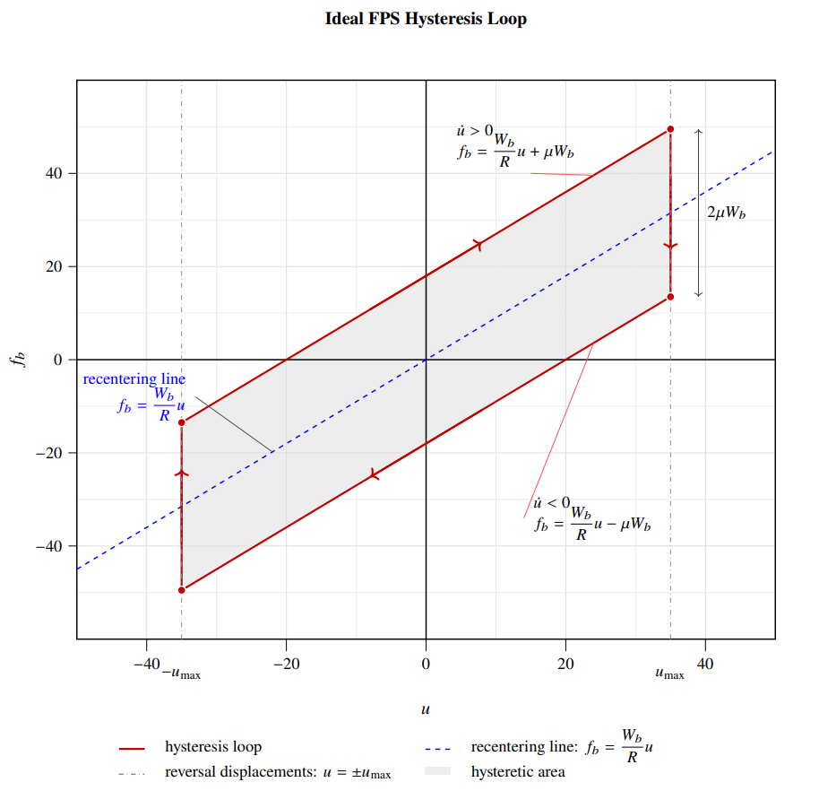

Base isolator hysteresis
Digitized force–displacement loops at four strain levels; per‑bearing storage stiffness \(K_1\), loss stiffness \(K_2\), equivalent viscous damping ratio \(\zeta_{\mathrm{eff}}\), and energy per cycle; trend plots vs strain.
The objective of this page is to present a coherent set of computational studies for seismic protective systems, with emphasis on base isolation, constitutive modeling, and response-history analysis under recorded ground motions. The examples are organized so that theory, numerical method, and engineering interpretation are presented together in each dashboard.
The material spans: (i) equivalent linearization from measured hysteresis loops, (ii) matrix-based Newmark integration for linear MDOF systems, and (iii) nonlinear bilinear regularization of friction-pendulum behavior with floor-spectrum evaluation for nonstructural components.
Notation: SDOF = single-degree-of-freedom, MDOF = multi-degree-of-freedom, RSA = response spectrum analysis, SRSS = square-root-of-sum-of-squares, FFT = fast Fourier transform, HDR = high-damping rubber.
This embedded viewer shows the complete CE223 HW5 report directly in the page so you can review equations, figures, and conclusions without leaving the CE223 dashboard.
If the embed does not render in your browser, open the file directly: CE223 HW5 PDF.
The first set of dashboards documents a base‑isolation workflow using a single‑degree‑of‑freedom (SDOF) model built from measured hysteresis of high‑damping rubber (HDR) bearings. The workflow yields equivalent SDOF parameters—storage stiffness \(K_1\), loss stiffness \(K_2\), and equivalent viscous damping ratio \(\zeta_\mathrm{eff}\)—and uses fixed‑point iteration on strain and \(\zeta_\mathrm{eff}\), plus time‑ and frequency‑domain response.
What this project shows
Digitized force–displacement loops at four strain levels; per‑bearing storage stiffness \(K_1\), loss stiffness \(K_2\), equivalent viscous damping ratio \(\zeta_{\mathrm{eff}}\), and energy per cycle; trend plots vs strain.

Fixed‑point iteration with four bearings (system stiffness \(k = 4K_1\)); convergence of strain and \(\zeta_{\mathrm{eff}}\); Newmark time integration vs fast Fourier transform (FFT) under the Kobe University record, component 090.

Models A, B, C: force–displacement loops; storage and loss stiffness \(K_1(\omega)\), \(K_2(\omega)\) vs frequency; equivalent damping coefficient (EDC); frequency‑domain earthquake response.
A second project focuses on linear multi‑degree‑of‑freedom (MDOF) response: a Newmark time‑integration implementation in matrix form and its relationship to modal superposition and response spectrum analysis (RSA). It is illustrated on a two‑degree‑of‑freedom (2‑DOF) shear frame and then on a 2‑DOF base‑isolated building under the Kobe University record, component 090 (KBU090).
What this project shows

Two‑degree‑of‑freedom (2‑DOF) shear frame under a short sustained load; non‑classical damping; direct MDOF time history vs modal approximation.

Direct MDOF time history via Newmark; modal time history and response spectrum analysis (RSA) with square‑root‑of‑sum‑of‑squares (SRSS) modal combination; drift, isolator displacement, base shear coefficient.
This study models a rigid-superstructure building supported on friction pendulum system (FPS) bearings. The isolator force law is represented through a bilinear regularization with kinematic hardening and solved with nonlinear Newmark time integration. An equivalent linear model is then built from secant stiffness and energy-equivalent damping, and both models are compared in terms of peak response and force-displacement behavior under Kobe and Sylmar records.
Using absolute floor acceleration from both analyses, floor spectra for nonstructural components (\(\zeta_p=2\%\)) are computed over a broad frequency range. This directly evaluates whether equivalent linearization can capture acceleration-sensitive demands in the high-frequency regime.
What this project shows

Bilinear regularized FPS model solved with nonlinear Newmark; equivalent linear comparison; normalized force histories and hysteresis; floor spectra for NSCs using absolute floor acceleration input.
Further background on dynamics, spectra, and numerical methods appears in the following course pages.